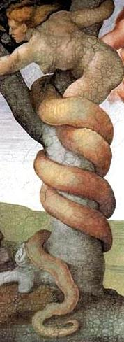

Título
Lilith
Lilith (em hebraico: לילית, em antigo árabe: ليليث), é uma figura feminina nas mitologias Judaica e da Mesopotâmia, interpretada como sendo a primeira esposa de Adão, criada ao mesmo tempo e da mesma forma que ele, e apresentada em diversos mitos e narrativas como uma personagem demoníaca primordial, ou um arquétipo na demonologia judaica e da Babilônia.[1] Na mitologia judaica, as passagens mais antigas interpretadas como referências a Lilith estão no Livro de Isaías, parte do Talmude hebraico e composto na época do exílio da Babilónia ou mais tardiamente (Séc. V a III a. C.). Lilith é mencionada em fontes mitológicas judaicas e mandeístas a partir do século V. Lilith é apresentada como a primeira mulher de Adão no Zohar e no manuscrito do Conflito de Adão e Eva com Satanás.[2] Lilith também aparece como um demônio em crenças tradicionais da cultura árabe.
Tradição Judaico-Cristã
No primeiro capítulo do livro de Gênesis ( Gn 1:27 ) está escrito que "Deus criou o homem à sua imagem e semelhança; criou-o à imagem de Deus, criou o homem e a mulher"; porém, no segundo capítulo (Gn 2:18): o Senhor Deus disse: 'Não é bom que o homem esteja só; vou dar-lhe uma ajuda que lhe seja adequada, e é apenas no versículo 22 do segundo capítulo que Eva é criada: E da costela que tinha tomado do homem, o Senhor Deus fez uma mulher, e levou-a para junto do homem.[3] Correntes de pensamento creem possível que a mulher criada no primeiro capítulo seja Lilith e, levando em consideração o versículo 23: Disse então o homem: Esta, sim, é osso dos meus ossos e carne da minha carne! Ela será chamada mulher, porque do homem foi tirada (Gn 2:23). [4], podemos verificar na expressão de Adão "[...] esta, sim, é osso dos meus ossos e carne da minha carne![...]" a afirmativa de existência de outra criatura que não era qualificada como mulher e que não se podia se submeter a ele pois era independente, estava no mesmo nível de criação, a mesma altura de Adão. Em algumas traduções o texto esta, sim... aparece como agora sim, esta ... o que não parece ser um erro de tradução, mas uma evidência da afirmação na narrativa. No séc. XIII, na obra de Isaac ben Jacob ha-Cohen, é introduzida a narrativa de Lilith deixar Adão ao não querer submeter-se à sua vontade e recusar ser-lhe subserviente com o argumento de ser igual a ele, criada ao mesmo tempo e da mesma matéria que Adão. Lilith abandona, então, o Jardim do Éden e não regressa após cópula com o Arcanjo Samael.
Gênesis
Existem diferentes interpretações sobre os fatos narrados no livro de Gênesis para sustentar a ideia também descrita no alfabeto de Ben-Sira. Em Gênesis 1, são descritos os detalhes da criação do mundo a partir das trevas e das águas, sendo no sexto dia a criação do homem e da mulher. No capítulo 2 de Gênesis há uma outra narração partindo da terra, podendo ser entendidos como dois eventos diferentes. O segundo foi escrito no tempo de Salomão e o primeiro, muito depois, no Exílio da Babilônia. O primeiro versículo de Gênesis capítulo 2 traz a conclusão dos últimos versículos do capítulo 1 E viu Deus tudo quanto tinha feito, e eis que era muito bom; e foi a tarde e a manhã, o dia sexto. - Gênesis 1:31 Assim os céus, a terra e todo o seu exército foram acabados. E havendo Deus acabado no dia sétimo a obra que fizera, descansou no sétimo dia de toda a sua obra, que tinha feito (Gênesis 2: 1-2). Sabendo-se que a divisão dos capítulos da Bíblia só veio a ocorrer muitos anos depois,[5] não é possível afirmar que os eventos de Gênesis 2 vieram muito tempo depois dos ocorridos em Gênesis 1, porém entende-se que, a partir de Gênesis 2: versículo 4, há uma outra narrativa do que ocorreu em Gênesis 1. Na primeira o homem é criado por último, como ápice da criação, enquanto na segunda o homem é criado em primeiro lugar e tudo é feito para ele: E formou o Senhor Deus o homem do pó da terra, e soprou em suas narinas o fôlego da vida; e o homem foi feito alma vivente. E disse o Senhor Deus: Não é bom que o homem esteja só; far-lhe-ei uma ajudadora idônea para ele. Outra citação contrária é a que Adão diz Esta sim, é ossos dos meus ossos[...], passando a ideia de Agora sim, está é minha verdadeira mulher..., pois se observar em todas as traduções (inglês[6], grego[7] ou latim[8]) não temos esta expressão esta sim, ou agora sim,. Em todas as traduções temos a versão -- E disse Adão: Esta é agora osso dos meus ossos[...] (Gênesis 2: 23). Judit Blair (2009) demonstra que todas as oito criaturas que são mencionadas são animais naturais.[
Alfabeto de Ben-Sira
No folclore popular hebreu medieval, ela é tida como a primeira mulher criada por Deus junto com Adão, que o abandonou, partindo do Jardim do Éden por causa de uma disputa sobre igualdade dos sexos, passando depois a ser descrita como um demônio. De acordo com a interpretação da criação humana no Gênesis feita no Alfabeto de Ben-Sira, entre 600 e 1000 d.C, Lilith foi criada por Deus com a mesma matéria prima de Adão, porém ela recusava-se a "ficar sempre por baixo durante as suas relações sexuais". Segundo este manuscrito milenar, Ben Sira conta a história de Lilith para Nabucodonosor II: Depois que Deus criou Adão, que estava sozinho, Ele disse: Não é bom que o homem esteja só (Gênesis 2:18). Ele então criou a mulher para Adão, da terra, como Ele havia criado o próprio Adão, e chamou-a de Lilith. Adão e Lilith imediatamente começaram a brigar. Lilith disse: Por que devo deitar-me embaixo de ti? Por que devo abrir-me sob teu corpo? Por que ser dominada por ti?" Contudo, eu também fui feita de pó e por isso sou tua igual. Adão retrucou: Eu não vou me deitar abaixo de você, apenas por cima. Pois você está apta apenas para estar na posição inferior, enquanto eu sou um ser superior. Lilith respondeu: Nós somos iguais um ao outro, considerando que ambos fomos criados a partir da terra. Mas eles não deram ouvidos um ao outro. Quando Lilith percebeu isso, ela pronunciou o Nome Inefável e voou para o ar. Adão orou ao seu Criador: Soberano do universo! A mulher que você me deu fugiu!. Ao mesmo tempo Deus enviou três anjos para trazê-la de volta. Os três anjos foram insistiram que ela voltasse e ameaçaram afogá-la, porém ela se recusou a voltar, sendo assim condenada por Deus a perder cem filhos por dia. Desde então, para proteger os recém-nascidos da influência de Lilith, seria necessário colocar amuletos com o nome dos três anjos (Snvi, Snsvi e Smnglof). Eva teria então sido criada a partir de Adão. Outra interpretação diz que Lilith juntou-se aos anjos caídos quando se casou com Samael, que tentou Eva, ao passo que Lilith tentou a Adão e os fizeram cometer adultério. Desde então o homem foi expulso do paraíso e Lilith tentaria destruir a humanidade, filhos do adultério de Adão com Eva, pois mesmo abandonando seu marido, ela não aceitava sua segunda mulher. Ela então passou a perseguir os homens, principalmente os adúlteros, crianças e recém casados para se vingar. Outras histórias referem-se a ela como surgida das trevas ou como um demônio do mar e não como igual ao homem. Infere-se pelos textos e por amuletos medievais que ela era uma superstição comum entre os camponeses. Deixar esculturas dos três anjos (Sanvi, Sansavi e Samangelaf) que a perseguiram para fora do Éden protegeria os bebês recém-nascidos (uma proteção necessária por oito dias para homens e vinte dias para mulheres) e impediria que seus maridos fossem seduzidos por Lilith a cometer adultério.
Mitologia suméria
A imagem de Lilith, sob o nome Lilitu, apareceu primeiramente representando uma categoria de demônios ou espíritos de ventos e tormentas na Suméria por volta de 3 000 a.C. Muitos estudiosos atribuem a origem do nome fonético Lilite por volta de 700 a.C. Na Suméria e na Babilônia ela ao mesmo tempo que era cultuada era identificada com os demônios e espíritos malignos. Seu símbolo era a lua, pois assim como a Lua ela seria uma deusa de fases boas e ruins. Alguns estudiosos assimilam-na a várias deusas da fertilidade, assim como deusas cruéis devido ao sincretismo com outras culturas.
Mitologia mesopotâmica
Ela é também associada a um demônio feminino da noite que originou na antiga Mesopotâmia. Era associada ao vento e, pensava-se, por isso, que ela era portadora de mal-estares, doenças e até mesmo da morte. Porém algumas vezes ela se utilizaria da água como uma espécie de portal para o seu mundo. Também nas escrituras hebraicas (Talmud e Midrash) ela é referida como uma espécie de demônio.
Judaísmo
Vemos assim a transformação de Lilith no modelo judaico de demônio. Assim surgiram as lendas vampíricas: Lilith tinha 100 filhos por dia, súcubos quando mulheres e íncubos quando homens, ou simplesmente lilim. Eles se alimentavam da energia desprendida no ato sexual e de sangue humano. Também podiam manipular os sonhos humanos, seriam os geradores das poluções noturnas. Mas uma vez possuído por uma súcubo, dificilmente um homem saía com vida. Há certas particularidades interessantes nos ataques de Lilith, como o aperto esmagador sobre o peito, uma vingança por ter sido obrigada a ficar por baixo de Adão, e sua habilidade de cortar o pênis com sua vagina segundo os relatos católicos medievais. Ao mesmo tempo que ela representa a liberdade sexual feminina, também representa a castração masculina. Pensa-se que o Relevo Burney (ver alusões à coruja na reprodução do Relevo de Burney, nesta página), um relevo sumério, represente Lilite; muitos acreditam também que há uma relação entre Lilith e Inanna, deusa suméria da guerra e do prazer sexual.
Mitologia grega
Algumas vezes Lilith é associada com a deusa grega Hécate, "A mulher escarlate", uma Deusa que guarda as portas do mundo inferior montada em um enorme cão de três cabeças, Cérbero. Hécate, assim como Lilith, representa na cultura grega a vida noturna e a rebeldia da mulher sobre o homem.
Era contemporânea
Nos dois últimos séculos, a imagem de Lilith começou a passar por uma notável transformação em certos círculos intelectuais seculares europeus, por exemplo, na literatura e nas artes, quando os românticos passaram a se ater mais a imagem sensual e sedutora de Lilith (ver a reprodução do quadro Lilith de John Collier, pintada em 1892), e aos seus atributos considerados impossíveis de serem obtidos, em um contraste radical à sua tradicional imagem demoníaca, noturna, devoradora de crianças, causadora de luxúria e vampirismo (ver texto gnóstico na seção de ligações externas). Podem ser citados também os nomes de Johann Wolfgang von Goethe, John Keats, Robert Browning, Dante Gabriel Rossetti e John Collier. [carece de fontes] Lilith também é considerada um dos arquidemônios símbolo da vaidade. O livro Gênesis Proibido - A Tragédia de Adão e Lilith (2014), retrata a saga de Lilith como a primeira mulher posta na Terra.